快速開始 / Starter Assets
# 1) standalone binary
asynqmon --port=8080 --redis-addr=localhost:6379
# 2) container
podman run --rm -p 8080:8080 localhost/local/asynqmon --redis-addr=host.containers.internal:6379
# 3) Go library embed (primary consumption mode; UI bundle is go:embed'ed)
h := asynqmon.New(asynqmon.Options{
RootPath: "/monitoring",
RedisConnOpt: asynq.RedisClientOpt{Addr: "localhost:6379"},
})
mux.Handle(h.RootPath()+"/", h)Starter assets(git-tracked): demo/main.go — 一鍵種出全部任務狀態 + live worker/scheduler; manual-screenshots.spec.ts — 截圖/VRT spec.
操作動線(UX Flow)
flowchart LR
A["Dashboard"] -->|點佇列| B["Queue detail
8 state tabs"] B -->|點任務列| C["Task details"] B -->|操作| D["run / archive / kill / delete"] A --> E["Servers"] A --> F["Schedulers"] A --> G["Redis Info"] A --> H["Settings"]
8 state tabs"] B -->|點任務列| C["Task details"] B -->|操作| D["run / archive / kill / delete"] A --> E["Servers"] A --> F["Schedulers"] A --> G["Redis Info"] A --> H["Settings"]
Dashboard
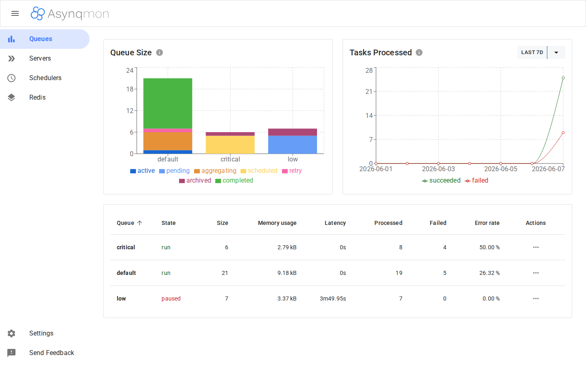
Evidence: live screenshot · seeded demoCoverage: full-integrationReadiness: PASS (review.md)
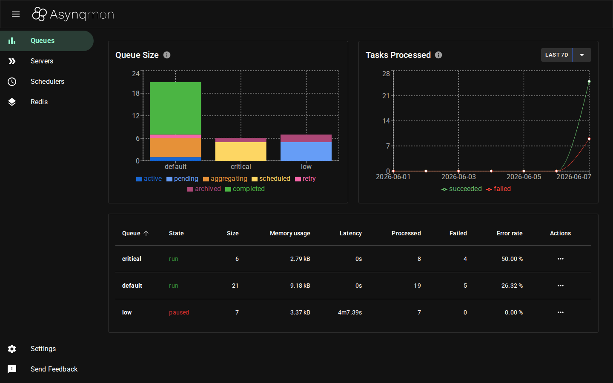
Evidence: live screenshot · seeded demoCoverage: full-integrationReadiness: PASS (review.md)
任務狀態(8 個 tabs)
| 狀態 | 含意 | demo 樣本 |
|---|---|---|
| Active | worker 處理中 | video:transcode |
| Pending | 等待派工(demo:佇列 paused 故停留) | image:resize ×5 |
| Aggregating | Group 聚合等待 | metrics:event ×5 |
| Scheduled | 未到 ProcessIn 時間 | report:generate ×5 (+2h) |
| Retry | 失敗待重試 | sync:export |
| Archived | 重試耗盡/手動封存 | billing:charge; image:resize ×2 |
| Completed | 成功且在 Retention 期內 | email:* ×14 |
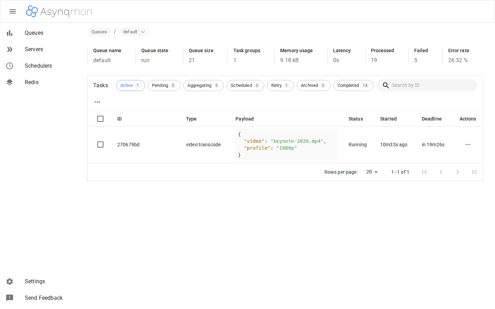
Evidence: live screenshot · seeded demoCoverage: full-integrationReadiness: PASS (review.md)
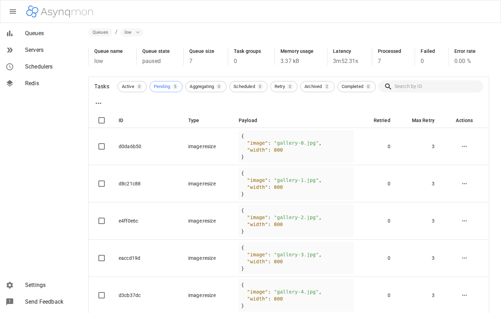
Evidence: live screenshot · seeded demoCoverage: full-integrationReadiness: PASS (review.md)
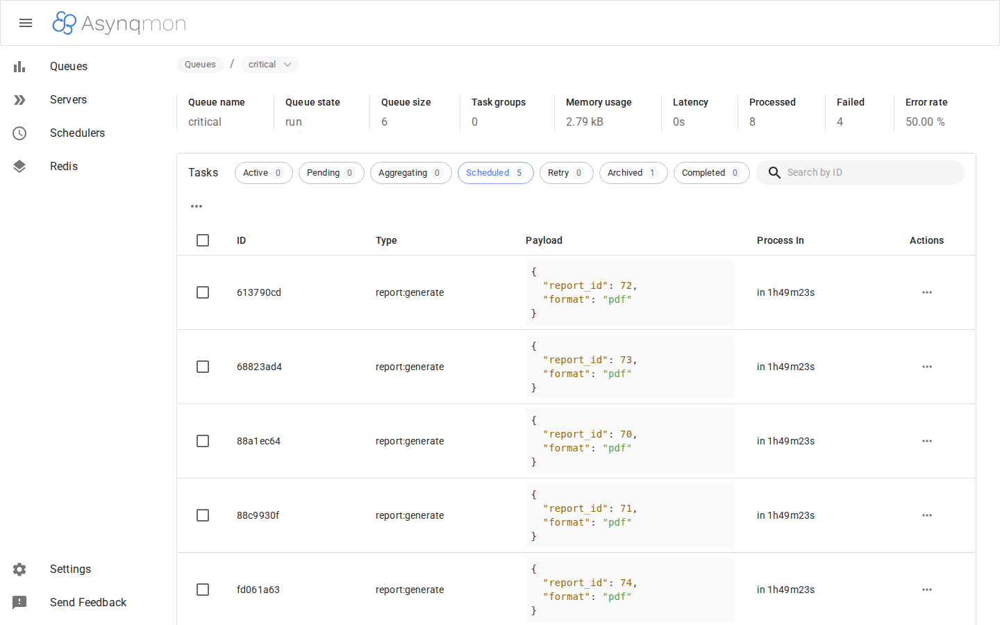
Evidence: live screenshot · seeded demoCoverage: full-integrationReadiness: PASS (review.md)

Evidence: live screenshot · seeded demoCoverage: full-integrationReadiness: PASS (review.md)
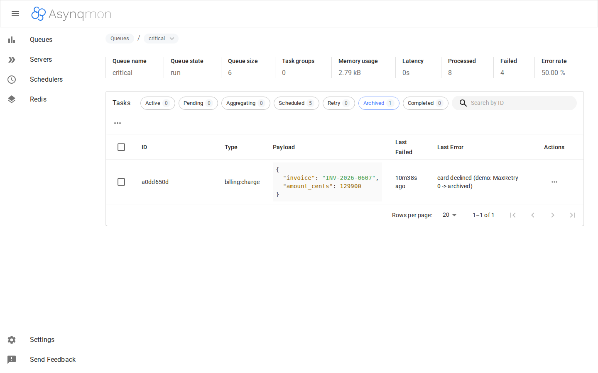
Evidence: live screenshot · seeded demoCoverage: full-integrationReadiness: PASS (review.md)
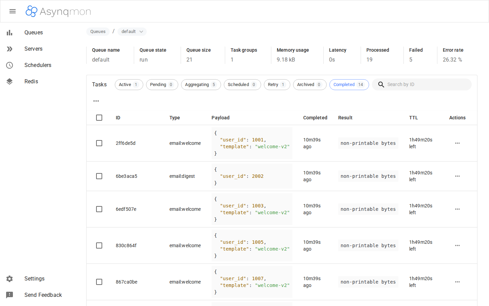
Evidence: live screenshot · seeded demoCoverage: full-integrationReadiness: PASS (review.md)
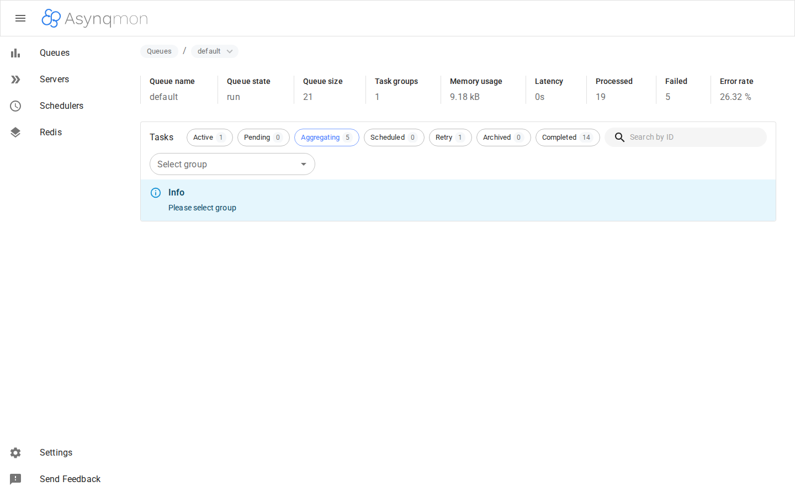
Evidence: live screenshot · seeded demoCoverage: full-integrationReadiness: PASS (review.md)
任務詳情
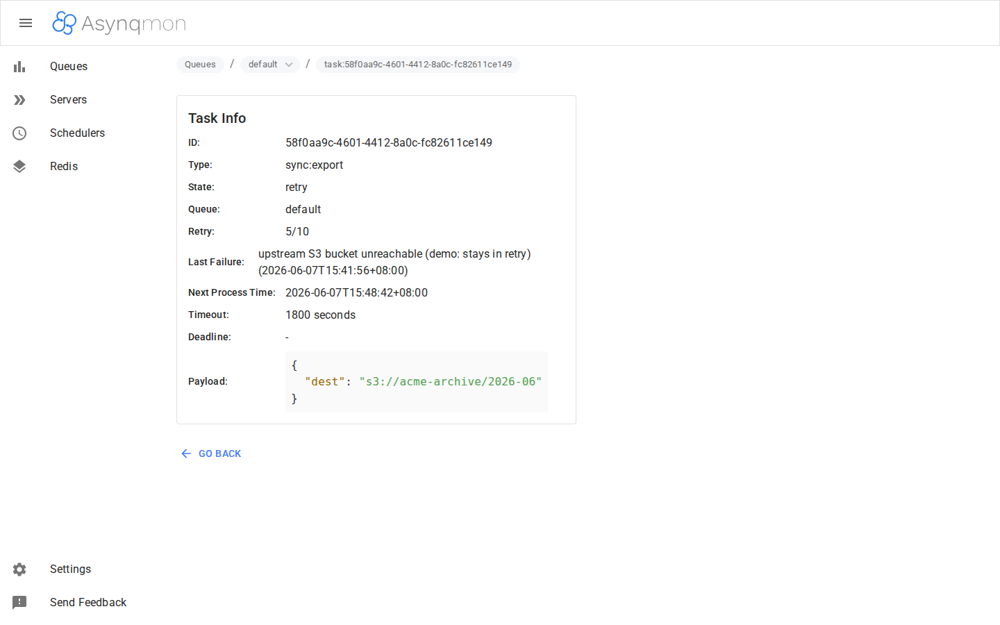
Evidence: live screenshot · seeded demoCoverage: full-integrationReadiness: PASS (review.md)
Servers

Evidence: live screenshot · seeded demoCoverage: full-integrationReadiness: PASS (review.md)
Schedulers
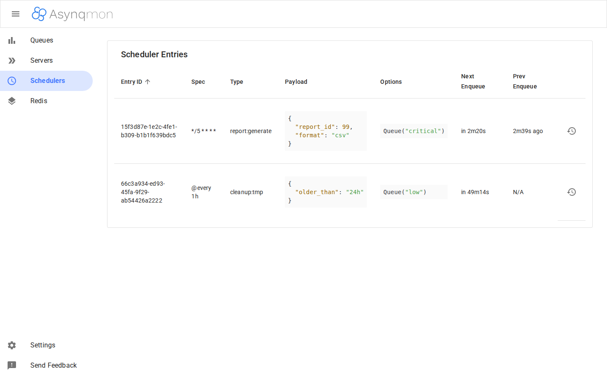
Evidence: live screenshot · seeded demoCoverage: full-integrationReadiness: PASS (review.md)
Redis Info
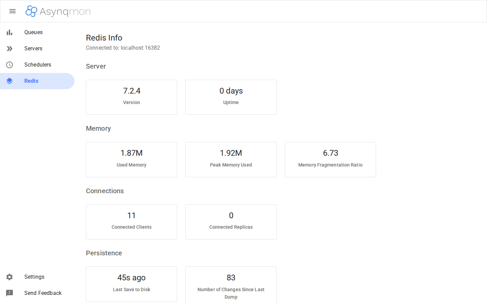
Evidence: live screenshot · seeded demoCoverage: full-integrationReadiness: PASS (review.md)
Settings
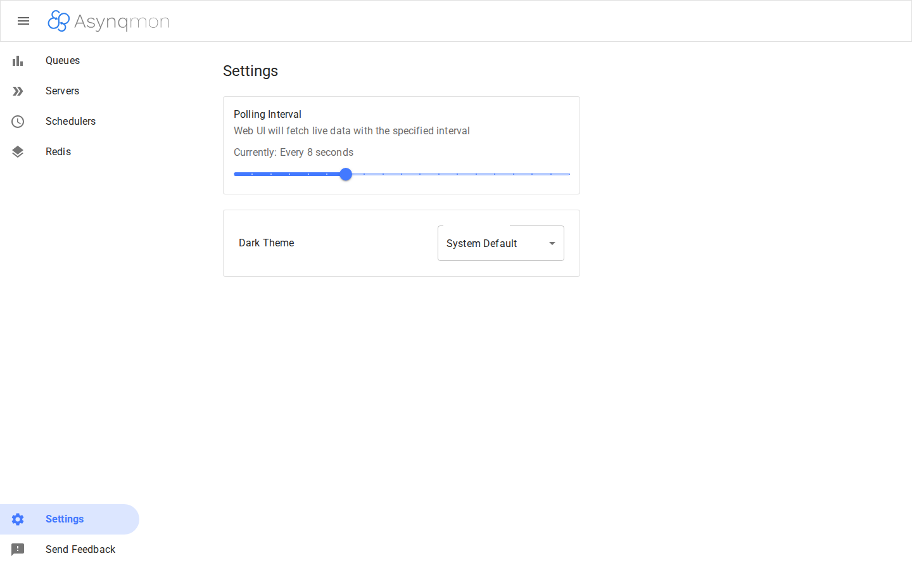
Evidence: live screenshot · seeded demoCoverage: full-integrationReadiness: PASS (review.md)
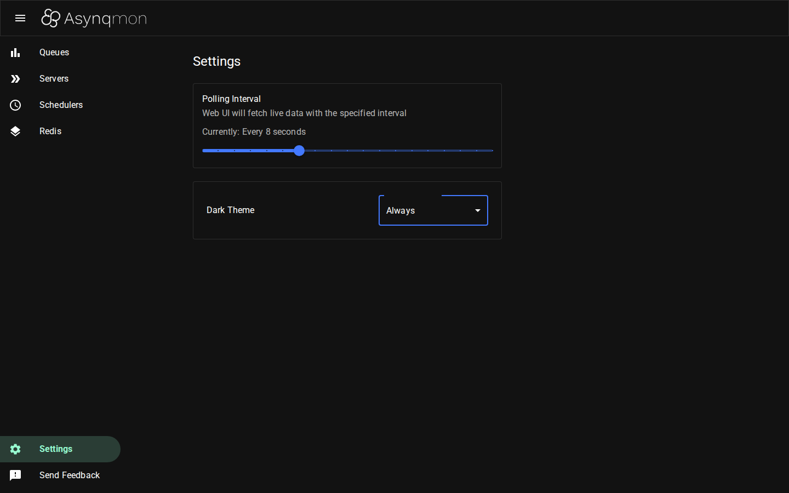
Evidence: live screenshot · seeded demoCoverage: full-integrationReadiness: PASS (review.md)
Metrics
啟用:server 帶 --enable-metrics-exporter --prometheus-addr=<prom>;Prometheus 抓 server 的 /metrics(exporter 佔用此路徑,UI 的 Metrics 頁在 /q/metrics,由側欄進入)。
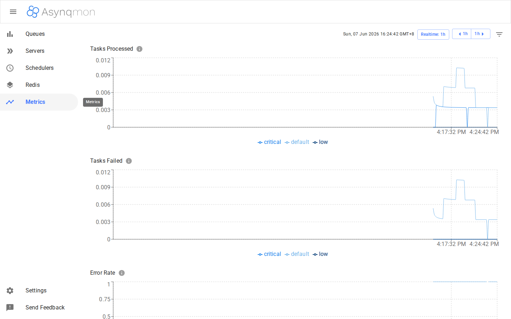
Evidence: live screenshot · seeded demoCoverage: full-integrationReadiness: PASS (review.md)

Evidence: live screenshot · seeded demoCoverage: full-integrationReadiness: PASS (review.md)
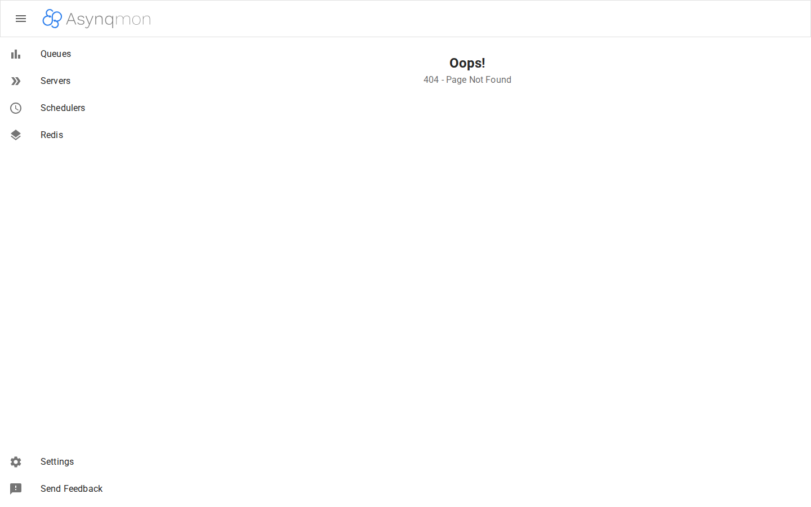
Evidence: live screenshot · seeded demoCoverage: full-integrationReadiness: PASS (review.md)
CLI flags
| Flag / Env | 說明 |
|---|---|
--port / PORT | 監聽埠(預設 8080) |
--redis-addr / REDIS_ADDR | Redis/Valkey 位址 |
--redis-url / REDIS_URL | redis:// 或 redis-sentinel:// URI |
--redis-cluster-nodes | cluster 節點列表 |
--read-only | 唯讀 UI(隱藏寫操作) |
--enable-metrics-exporter + --prometheus-addr | 啟用 Metrics 頁 |
asynqmon --help(Go flag 慣例,exit code 2)